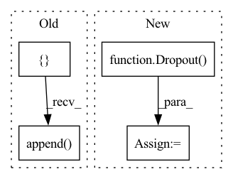

Pattern ID :16846
Before Change
super().__init__()
self.GNN_layers = []
for hid, activation, l2_norm in zip(hiddens, activations, l2_norms):
layer = GraphConvolution(hid, use_bias=use_bias,
activation=activation,
kernel_regularizer=regularizers.l2(l2_norm))
self.GNN_layers.append(layer)
layer = GraphConvolution(out_channels, use_bias=use_bias)
self.GNN_layers.append( layer)
self.dropout = Dropout(dropout)
self.compile(loss=SparseCategoricalCrossentropy(from_logits=True),
optimizer=Adam(lr=lr), metrics=["accuracy"])After Change
activation=activation,
kernel_regularizer=regularizers.l2(l2_norm))([h, adj])
h = Dropout(rate=dropout) (h)
h = GraphConvolution(out_channels, use_bias=use_bias)([h, adj])
h = Gather()([h, index])
super().__init__(inputs=[x, adj, index], outputs=h)
self.compile(loss=SparseCategoricalCrossentropy(from_logits=True),In pattern: SUPERPATTERN
Frequency: 3
Non-data size: 4
Instances Fragment ID: 56327439
Project Name: edisonleeeee/graphgallery
Commit Name: 5097252beb74a704f014c9d3501c2ab489f9ba12
Time: 2020-09-30
Author: cnljt@outlook.com
File Name: graphgallery/nn/models/semisupervised/tf_models/gcn.py
M Class Name: GCN
N Class Name: GCN
M Method Name: __init__(10)
N Method Name: __init__(8)
M Parent Class: Model
N Parent Class: Model
M File Name: graphgallery/nn/models/semisupervised/tf_models/gcn.py
N File Name: graphgallery/nn/models/semisupervised/tf_models/gcn.py
M Start Line: 18
M End Line: 35
N Start Line: 13
N End Line: 35
Before Change
self.dropouts = dropouts
self.layers = ModuleList()
self.acts = []
paras = []
inc = in_channels
pre_head = 1
for hidden, n_head, act, l2_norm in zip(hiddens, n_heads, activations, l2_norms):
layer = SparseGraphAttention(inc * pre_head, hidden, attn_heads=n_head, reduction="concat", use_bias=use_bias)
self.layers.append(layer)
self.acts.append( get_activation(act))
paras.append(dict(params=layer.parameters(), weight_decay=l2_norm))
inc = hidden
pre_head = n_head
After Change
self.optimizer = optim.Adam(paras, lr=lr)
self.loss_fn = torch.nn.CrossEntropyLoss()
self.dropout = Dropout( dropout)
def forward(self, inputs):
x, adj, idx = inputs
Fragment ID: 56327441
Project Name: edisonleeeee/graphgallery
Commit Name: f3e18316684d2d2219aa1410ef2f1fe8d6043b1f
Time: 2020-09-30
Author: cnljt@outlook.com
File Name: graphgallery/nn/models/semisupervised/th_models/gat.py
M Class Name: GAT
N Class Name: GAT
M Method Name: __init__(10)
N Method Name: __init__(10)
M Parent Class: TorchKerasModel
N Parent Class: TorchKerasModel
M File Name: graphgallery/nn/models/semisupervised/th_models/gat.py
N File Name: graphgallery/nn/models/semisupervised/th_models/gat.py
M Start Line: 22
M End Line: 33
N Start Line: 40
N End Line: 40
Before Change
self.dropouts = dropouts
self.layers = ModuleList()
self.acts = []
paras = []
// use ModuleList to create layers with different size
inc = in_channels
for hidden, act, l2_norm in zip(hiddens, activations, l2_norms):
layer = GraphConvolution(inc, hidden, use_bias=use_bias)
self.layers.append(layer)
self.acts.append( get_activation(act))
paras.append(dict(params=layer.parameters(), weight_decay=l2_norm))
inc = hidden
layer = GraphConvolution(inc, out_channels, use_bias=use_bias)After Change
// do not use weight_decay in the final layer
paras.append(dict(params=layer.parameters(), weight_decay=0.))
self.dropout = Dropout( dropout)
self.optimizer = optim.Adam(paras, lr=lr)
self.loss_fn = torch.nn.CrossEntropyLoss()
def forward(self, inputs): Fragment ID: 56327444
Project Name: edisonleeeee/graphgallery
Commit Name: f3e18316684d2d2219aa1410ef2f1fe8d6043b1f
Time: 2020-09-30
Author: cnljt@outlook.com
File Name: graphgallery/nn/models/semisupervised/th_models/gcn.py
M Class Name: GCN
N Class Name: GCN
M Method Name: __init__(9)
N Method Name: __init__(9)
M Parent Class: TorchKerasModel
N Parent Class: TorchKerasModel
M File Name: graphgallery/nn/models/semisupervised/th_models/gcn.py
N File Name: graphgallery/nn/models/semisupervised/th_models/gcn.py
M Start Line: 16
M End Line: 33
N Start Line: 15
N End Line: 36